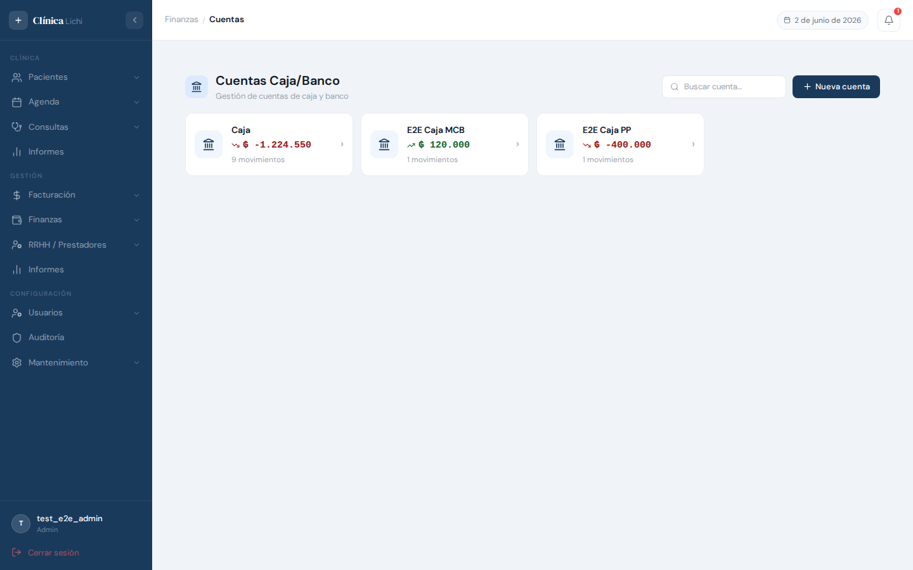
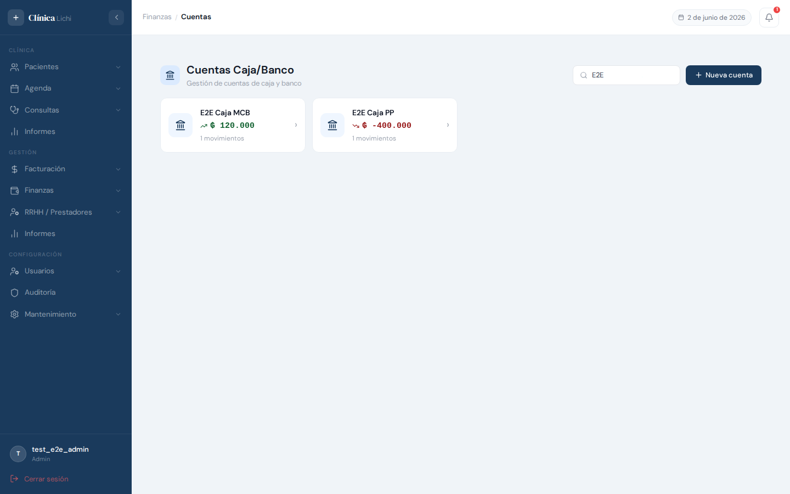
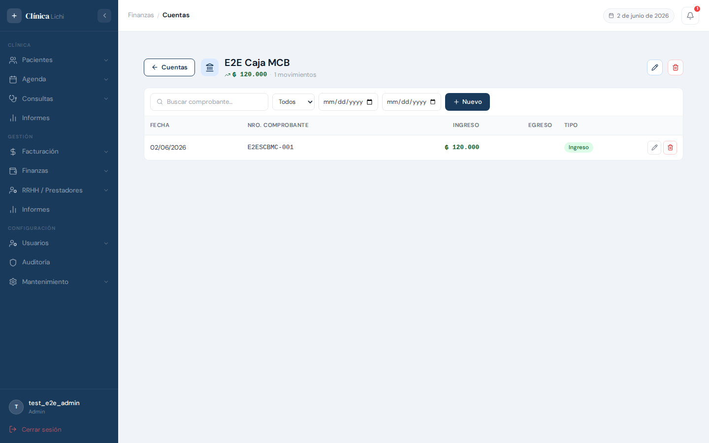
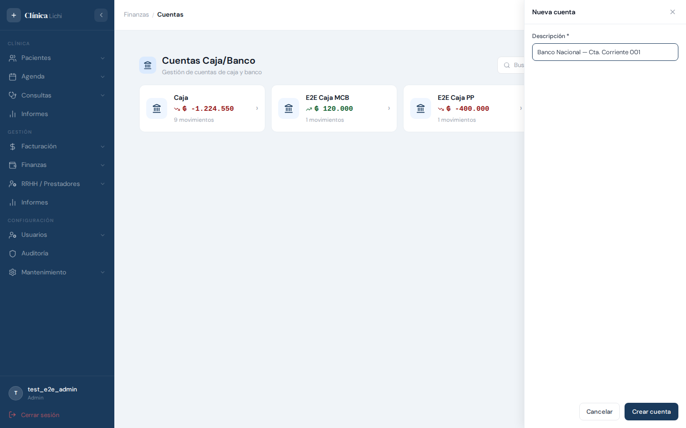
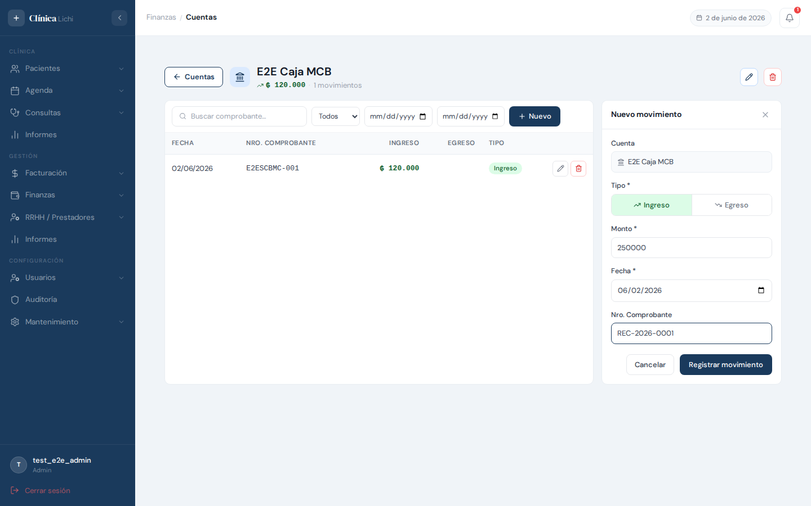
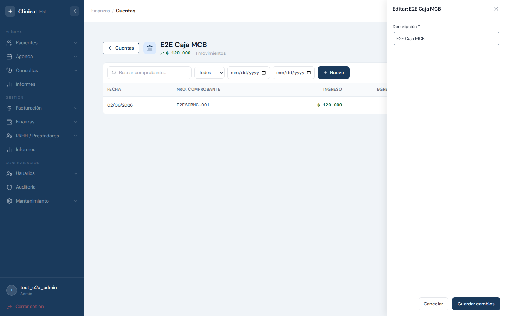
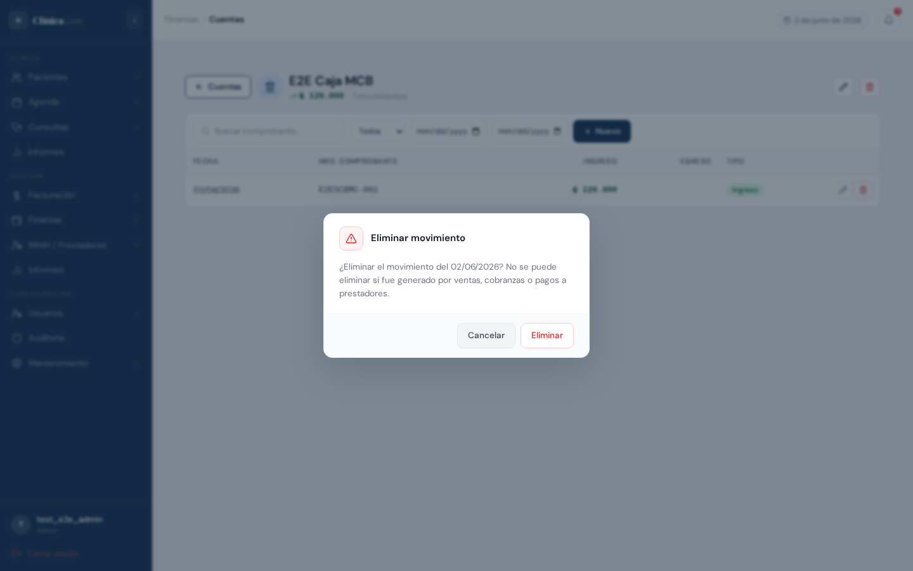

Descripción del módulo
El módulo Cuentas Caja/Banco permite administrar las cuentas financieras de la clínica (cajas, cuentas bancarias, fondos) y registrar todos sus movimientos de ingreso y egreso. Funciona como un libro de caja digital: cada cuenta tiene su propio historial de transacciones y el sistema calcula el saldo actual de forma automática.
Los movimientos pueden originarse de dos formas: manualmente (registrados directamente en este módulo) o de forma automática cuando se procesan cobranzas o pagos a prestadores. Los movimientos generados automáticamente no pueden editarse ni eliminarse desde esta pantalla.
Permisos por rol
| Acción | Admin | Recepcionista | Médico | Secretaria |
|---|---|---|---|---|
| Ver lista de cuentas | ✅ | ✅ | ✅ | ✅ |
| Ver movimientos de una cuenta | ✅ | ✅ | ✅ | ✅ |
| Ver cuentas eliminadas | ✅ | ✅ | ✅ | ✅ |
| Crear nueva cuenta | ✅ | ❌ | ❌ | ❌ |
| Editar nombre de cuenta | ✅ | ❌ | ❌ | ❌ |
| Eliminar cuenta | ✅ | ❌ | ❌ | ❌ |
| Registrar movimiento manual | ✅ | ✅ | ❌ | ❌ |
| Editar movimiento manual | ✅ | ✅ | ❌ | ❌ |
| Eliminar movimiento | ✅ | ❌ | ❌ | ❌ |
| Dashboard mensual | ✅ | ✅ | ✅ | ✅ |
Acceder al módulo
El módulo se encuentra en el menú lateral izquierdo, dentro del grupo Finanzas. Hacer clic en Cuentas Caja/Banco para abrir la pantalla principal.
- Iniciar sesión con un usuario con acceso al grupo Finanzas (admin o recepcionista).
- En el menú lateral, expandir el grupo Finanzas.
- Hacer clic en Cuentas Caja/Banco.
- Se carga la pantalla principal con la grilla de tarjetas de cuentas.
Pantalla principal — cuentas
Al ingresar al módulo, se muestra una grilla de tarjetas, una por cada cuenta activa. Cada tarjeta muestra:
- Nombre de la cuenta — descripción ingresada al crearla.
- Saldo actual — calculado automáticamente como suma de ingresos menos egresos de los movimientos activos. Se muestra en verde si es positivo, en rojo si es negativo.
- Cantidad de movimientos — total de movimientos activos registrados.

En el encabezado de la pantalla se encuentran el buscador de cuentas y el botón Nueva cuenta (visible solo para administradores). Hacer clic en cualquier tarjeta abre la vista de movimientos de esa cuenta.
Buscar cuentas
El campo de búsqueda en el encabezado filtra las tarjetas por el nombre de la cuenta. La búsqueda es en tiempo real con un retardo de 300 ms (no requiere presionar Enter).

- La búsqueda es insensible a mayúsculas: "caja" encuentra "Caja Principal".
- Si no hay coincidencias, se muestra el mensaje "No hay cuentas registradas."
- Para limpiar el filtro, borrar el texto del campo de búsqueda.
Ver movimientos de una cuenta
Al hacer clic en una tarjeta de cuenta, la pantalla cambia a la vista de movimientos de esa cuenta (drill-down). El encabezado muestra el nombre de la cuenta, su saldo actual y la cantidad total de movimientos.

Columnas de la tabla de movimientos
| Columna | Descripción |
|---|---|
| Fecha | Fecha del movimiento en formato DD/MM/AAAA. |
| Nro. Comprobante | Número de comprobante opcional. Si no tiene, se muestra "—". |
| Ingreso | Monto ingresado (en verde). Vacío si es un egreso. |
| Egreso | Monto egresado (en rojo). Vacío si es un ingreso. |
| Tipo | Badge verde Ingreso o rojo Egreso. |
| Acciones | Lápiz (editar, solo movimientos manuales) y papelera (eliminar, solo admin). |
Filtros disponibles
- Buscador — filtra por número de comprobante.
- Tipo — selector con opciones: Todos / Ingresos / Egresos.
- Fecha desde / hasta — filtro por rango de fechas.
Volver a la lista de cuentas
Hacer clic en el botón ← Cuentas en el encabezado para regresar a la grilla de tarjetas. También se puede usar el botón Atrás del navegador.
Crear una cuenta
Solo el Administrador puede crear nuevas cuentas. El botón + Nueva cuenta aparece en el encabezado de la pantalla principal.
- Hacer clic en + Nueva cuenta.
- Se abre un panel lateral con el campo Descripción.
- Ingresar un nombre descriptivo (ej: "Caja Principal", "Banco XYZ — Cta. Cte. 001").
- Hacer clic en Crear cuenta.
- La nueva tarjeta aparece en la grilla con saldo ₲ 0 y 0 movimientos.

Reglas de unicidad
- El nombre de la cuenta debe ser único (insensible a mayúsculas). "Caja principal" y "CAJA PRINCIPAL" se consideran iguales.
- Si el nombre ya existe, el sistema muestra un error y el panel permanece abierto para corregirlo.
- Un nombre previamente eliminado puede reutilizarse sin inconvenientes.
Registrar un movimiento
Admin y Recepcionista pueden registrar movimientos manuales dentro de cualquier cuenta activa.
- Hacer clic en la tarjeta de la cuenta destino para abrir su vista de movimientos.
- Hacer clic en + Nuevo en la barra de herramientas.
- Se abre el panel lateral de registro de movimiento.
- Seleccionar el Tipo: Ingreso (fondo verde) o Egreso (fondo rojo).
- Ingresar el Monto (en Guaraníes, sin decimales).
- Verificar o modificar la Fecha (por defecto: hoy).
- Opcionalmente, ingresar el Nro. Comprobante.
- Hacer clic en Registrar movimiento.

Campos del movimiento
| Campo | Obligatorio | Descripción |
|---|---|---|
| Cuenta | — | Se carga automáticamente con la cuenta activa. Solo lectura. |
| Tipo | Sí | Ingreso o Egreso. Por defecto: Ingreso. |
| Monto | Sí | Monto en Guaraníes. Debe ser mayor a cero. |
| Fecha | Sí | Fecha del movimiento. Por defecto: fecha actual. |
| Nro. Comprobante | No | Número de factura, recibo u otro comprobante de respaldo. |
Editar cuenta o movimiento
Editar nombre de una cuenta
Solo el Administrador puede editar el nombre de una cuenta. Esta acción está disponible desde la vista de movimientos de la cuenta.
- Ingresar a la cuenta haciendo clic en su tarjeta.
- En el encabezado, hacer clic en el botón lápiz (ícono de editar).
- Se abre el panel con el nombre actual precargado.
- Modificar la descripción y hacer clic en Guardar cambios.

Editar un movimiento manual
Admin y Recepcionista pueden editar los campos de cualquier movimiento que haya sido registrado manualmente. Los movimientos automáticos (de cobranzas, ventas o pagos a prestadores) no muestran el botón de lápiz.
- En la tabla de movimientos, hacer clic en el botón lápiz de la fila a editar.
- Se abre el panel lateral con los datos del movimiento precargados.
- Modificar los campos deseados: tipo, monto, fecha o comprobante.
- Hacer clic en Guardar cambios.
Eliminar cuenta o movimiento
Eliminar una cuenta
Una cuenta solo puede eliminarse si no tiene movimientos activos. Si la cuenta tiene movimientos, el sistema rechaza la operación.
- Ingresar a la cuenta haciendo clic en su tarjeta.
- En el encabezado, hacer clic en el botón papelera roja.
- Aparece el diálogo de confirmación: "¿Eliminar la cuenta?"
- Hacer clic en Eliminar para confirmar, o Cancelar para abortar.
- Al confirmar, la pantalla regresa a la grilla y la tarjeta desaparece.
Eliminar un movimiento
Solo los movimientos manuales pueden eliminarse. Los movimientos generados automáticamente por el sistema (cobranzas, ventas, pagos) son rechazados con un error.
- En la tabla de movimientos, hacer clic en el botón papelera de la fila a eliminar.
- Aparece el diálogo de confirmación con la fecha del movimiento.
- Hacer clic en Eliminar para confirmar.
- La fila desaparece de la tabla y el saldo de la cuenta se actualiza automáticamente.

Mensajes de error frecuentes
| Mensaje / Situación | Causa | Solución |
|---|---|---|
| "Ya existe una cuenta con esa descripción." | Se intentó crear o renombrar una cuenta con un nombre que ya usa otra cuenta activa. | Usar un nombre diferente. |
| "La descripción es requerida." | Se intentó guardar una cuenta sin completar el campo de descripción. | Ingresar un nombre descriptivo antes de guardar. |
| "El monto debe ser mayor a cero." | Se intentó registrar un movimiento con monto 0. | Ingresar un monto positivo mayor a cero. |
| "No se puede eliminar una cuenta con movimientos activos." | La cuenta tiene al menos un movimiento no eliminado. | Eliminar primero todos los movimientos de la cuenta, o dejar la cuenta inactiva en lugar de eliminarla. |
| "No se puede eliminar un movimiento generado automáticamente." | Se intentó eliminar un movimiento creado por el sistema (cobranza, venta o pago a prestador). | No es posible eliminarlo directamente. Para revertirlo, eliminar la cobranza, factura o pago de prestador correspondiente desde su módulo de origen. |
| "No se puede editar un movimiento generado automáticamente." | Se intentó editar (vía API) un movimiento generado por el sistema. | El botón de lápiz no aparece en la UI para estos movimientos. Esta validación es adicional en el backend. |
| El saldo muestra valor negativo | Los egresos acumulados superan los ingresos de la cuenta. | Comportamiento esperado. El sistema muestra el saldo negativo en rojo con ícono de flecha hacia abajo. |
| El botón lápiz no aparece en una fila | El movimiento fue generado automáticamente por cobranzas, ventas o pagos a prestadores. | Comportamiento esperado. Estos movimientos son de solo lectura. |
| El botón "Nueva cuenta" no aparece | El usuario autenticado no tiene el rol de administrador. | Comportamiento esperado. Solo admin puede crear cuentas. |
| La tabla de movimientos muestra "Sin movimientos para los filtros aplicados." | No existen movimientos que coincidan con los filtros activos (tipo, rango de fechas, búsqueda). | Limpiar los filtros usando el selector de tipo (seleccionar "Todos"), borrando las fechas y el texto del buscador. |
Comportamientos esperados que no son errores
- Saldo negativo — se muestra en rojo; es un estado válido si la cuenta tiene más egresos que ingresos.
- Tarjeta con 0 movimientos — una cuenta recién creada tiene saldo ₲ 0 y 0 movimientos; esto es correcto.
- Lápiz no aparece en movimientos automáticos — diseño intencional para preservar la integridad de los datos originados en otros módulos.
- Comprobante vacío muestra "—" — el número de comprobante es un campo opcional; si no se completó, la celda muestra un guión.
- El saldo se actualiza al eliminar un movimiento — el recálculo es automático; no requiere recargar la página.